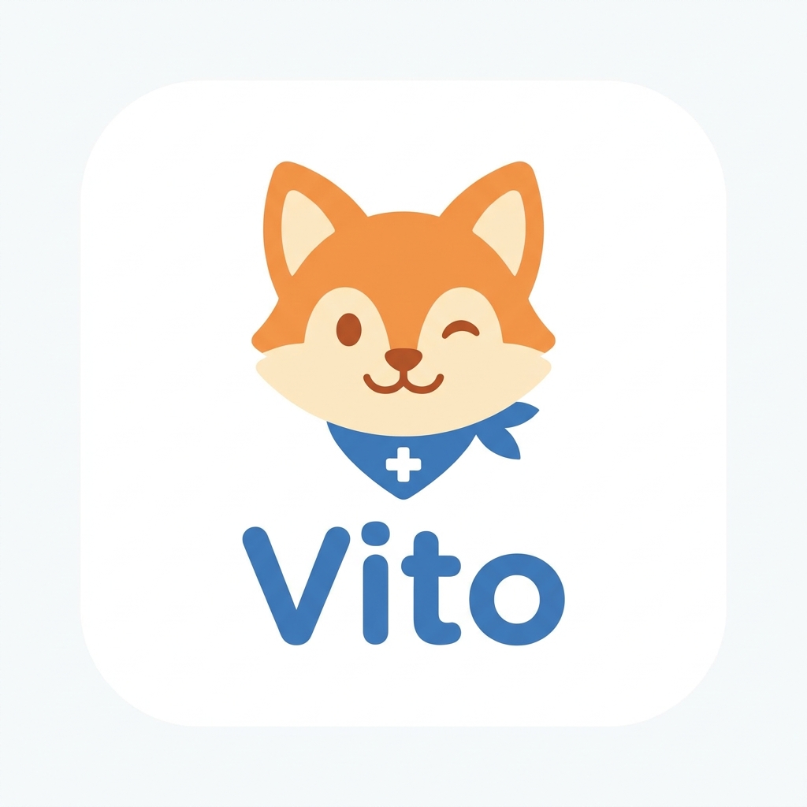
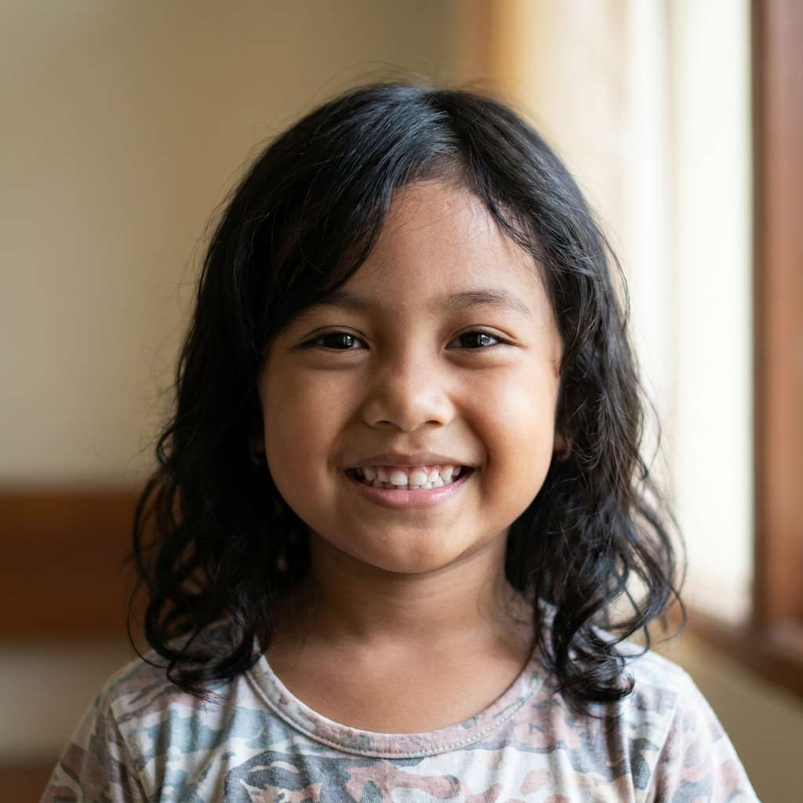

Onboarding & Login 6 layar
Ini kesan pertama orang tua terhadap KidVital: kenapa pemantauan rutin di rumah itu penting, bagaimana notifikasi darurat bekerja, dan siapa itu Vito — sebelum akhirnya mereka membuat akun keluarga.
Parent Mode — Monitoring & Dashboard 4 layar
Di sinilah ide "pemantauan rutin di rumah" jadi kelihatan wujudnya: suhu, saturasi oksigen, dan detak jantung anak mengalir otomatis dari termometer atau oksimeter lewat Bluetooth, tanpa orang tua perlu mencatat manual. Begitu ada angka yang keluar dari batas wajar, KidVital langsung memberi peringatan lengkap dengan saran tindakan.
Tanya KidVital — Asisten AI 2 layar
Kadang orang tua ragu: gejala ini perlu buru-buru ke dokter, atau cukup dipantau dulu di rumah? Asisten AI ini hadir untuk menjawab keraguan itu lewat obrolan santai, dengan rujukan ke pedoman medis resmi. Tapi digarisbawahi jelas: ini alat bantu skrining awal, bukan pengganti diagnosis dokter.
Kids Mode 3 layar
Edukasi kesehatan buat anak biasanya membosankan dan satu arah. KidVital mencoba membaliknya lewat Vito, si rubah maskot, yang mengajak anak menyelesaikan misi harian seperti minum air, cek suhu, atau latihan napas. Setiap misi yang selesai jadi lencana untuk anak — sekaligus data kepatuhan yang bisa dilihat dokter.
Doctor Mode 2 layar
Dokter anak butuh gambaran cepat, bukan tumpukan berkas. Dashboard ini merangkum data vital dan riwayat tiap pasien secara real-time, menyatukan informasi yang selama ini tersebar di buku KIA, ingatan orang tua, dan rekam medis rumah sakit yang berbeda-beda.
Brand Assets
Vito si rubah kecil adalah wajah ramah KidVital di mata anak-anak — muncul sejak onboarding, di mode anak, sampai jadi indikator kepatuhan. Referensi visual anak ini dipakai supaya kesan "hangat dan dekat" tetap terasa di setiap layar, bukan sekadar aplikasi medis yang kaku.

